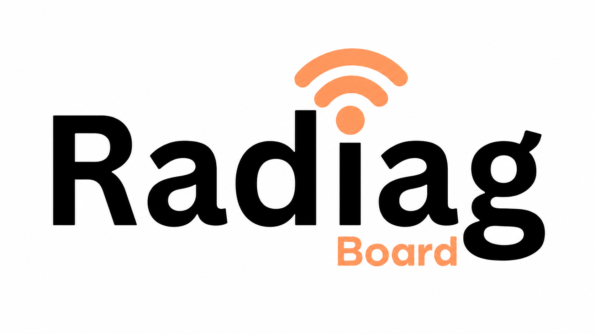

از سیگنال واقعی تا اقدام اولویتدار
داشبورد اپراتوری برای دیدن وضعیت شبکه، تشخیص مشکلات محتمل، و رسیدن به صف اقدام — با زبان Possible / Likely و Confidence صریح.
مسیر تصمیم اپراتور
یک جریان واحد از دادهٔ crowdsourced تا اقدام روی شبکه.
- اندازهگیری Measurement
- بینش Insight
- اولویت Priority
- اقدام Action
Radiag Board چه کاری میکند؟
Overview برای پاسخ ۱۰ثانیهای، نقشهٔ H3 برای محل دقیق مشکل، و Action Center برای صف اولویتدار تحقیق و بهینهسازی — بدون ادعای root cause قطعی از دادهٔ crowd alone.
ورود به Radiag Board